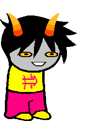

Prince of Time
Full name: Osamco Negtiv
Trolltag/Chumhandle: cleverDouchebag
Quirk: thE quiCk bRown fox jumps oVER thE Lazy dog!
Associated Colour: #FF0080
Session: Trollplay
Dancestor: WorldEnder
Modus: Sanity Modus
(The less sane he is, the more cards open up on a scale of 1-20.)
Strife Specibus: 2XScytheswordkind
Server: Litl_E
Client: Litl_E
Matesprit: N/A
Kismisis: N/A
Morail: Litl_E Postiv
Auspistice: N/A
Land:
Your land is the LAND OF TOGGLES AND SWITCHES. Your hive arrives compressing a large button. From a distance, it looks like a BALL full of BUMPS AND TOWERS, but a closer inspection would reveal the BUMPS to be LARGE BUTTONS, and the TOWERS to be similarly sized LEVERS. Some BUTTONS contain SMALLER BUTTONS AND LEVERS on them, needing to be pressed in a particular order to press the LARGEST BUTTON. The LEVERS are similarly designed. Making a mistake will reset all of the TOGGLES, and will assign them a new pattern. Once both of the largest TOGGLES are properly toggled, the BUTTON underneath your hive will decompress, revealing a door to the winding stairs to your DENIZEN. Unlike other Time players, your DENIZEN is OPIS. The Choice you will be presented with will be much easier, but with far less of a reward for choosing right. However, defeating OPIS grants you a much larger HOARD, and many other things well, such as FOOD, WATER, and WEAPONS.
Notes 1:
- Litl_E once explained to Osamco What would happen if an unstoppable force hit an immovable object. Osamco understood none of it, and is now afraid of ham.
- Alpha version of Ante.
- Was originally the Maid of Orb, but changed his past selves classpect to make the session winnable.
- Has omnipotence due to a deal With his denizen, that also made him stupid.
Notes 2:
- Easy to trap in boxes.
- Don't make a joke about your head being empty around him.